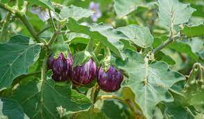
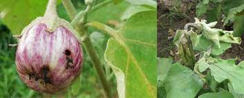

Brinjal, also known as eggplant or aubergine, is a warm-season crop that belongs to the nightshade family. It is widely cultivated for its edible fruits, which come in various shapes and colors. Brinjal is one of the most common tropical vegetables grown in India.
Brinjal is known for its versatility in cooking and is a key ingredient in various cuisines worldwide. It is used in dishes such as curries, stews, and even in making dips like baba ganoush.
Brinjal is typically grown in well-drained, fertile soil with a slightly acidic to neutral pH. It requires full sun for optimal growth. The crop is usually planted in the spring and harvested in the summer. Adequate water and nutrient management are essential for a successful harvest.
Brinjal is a warm-season crop and requires a long warm growing season. It is very susceptible to frost. A daily mean temperature of 13-21 oC is most favorable for its successful production. The growth of the crop is severely affected when the temperature falls below 17 oC. It can be successfully grown as a rainy season and summer season crop and can be cultivated at elevations of up to 1200m above sea level.
There are numerous varieties of brinjal, each with its own unique characteristics. Varieties may differ in size, shape, color, and taste. Some common varieties include Black Beauty, Long Purple, and Japanese Eggplant.
The choice of variety depends on factors such as climate, soil conditions, and culinary preferences. Farmers often select varieties that are well-suited to their specific growing conditions.
Brinjal prefers well-drained soil that is rich in organic matter. Sandy loam or loamy soil is suitable for brinjal cultivation. The soil should have good water retention capacity to ensure consistent moisture for the plants.
Brinjal is a hardy crop and is cultivated under a wide range of soils. Since it is a long-duration crop with high yield, well-drained and fertile soil is preferred for the crop. The ideal pH for cultivation is between 5.5 - 6.6.
Common diseases affecting brinjal include fungal infections like early blight and bacterial wilt. Proper sanitation, crop rotation, and the use of disease-resistant varieties can help manage these issues.
Regular monitoring and prompt action are essential to prevent the spread of diseases and ensure a healthy crop. Farmers may use organic or chemical methods to control pests and diseases based on their preferences and ecological considerations.
Brinjal is usually ready for harvest about 70 to 90 days after transplanting. The fruits should be harvested when they reach the desired size and color. Proper harvesting techniques, including the use of sharp tools, help prevent damage to the plant.
Harvested brinjals can be used fresh or stored for a short period. They are commonly used in various culinary dishes, adding flavor, texture, and nutritional value to meals.